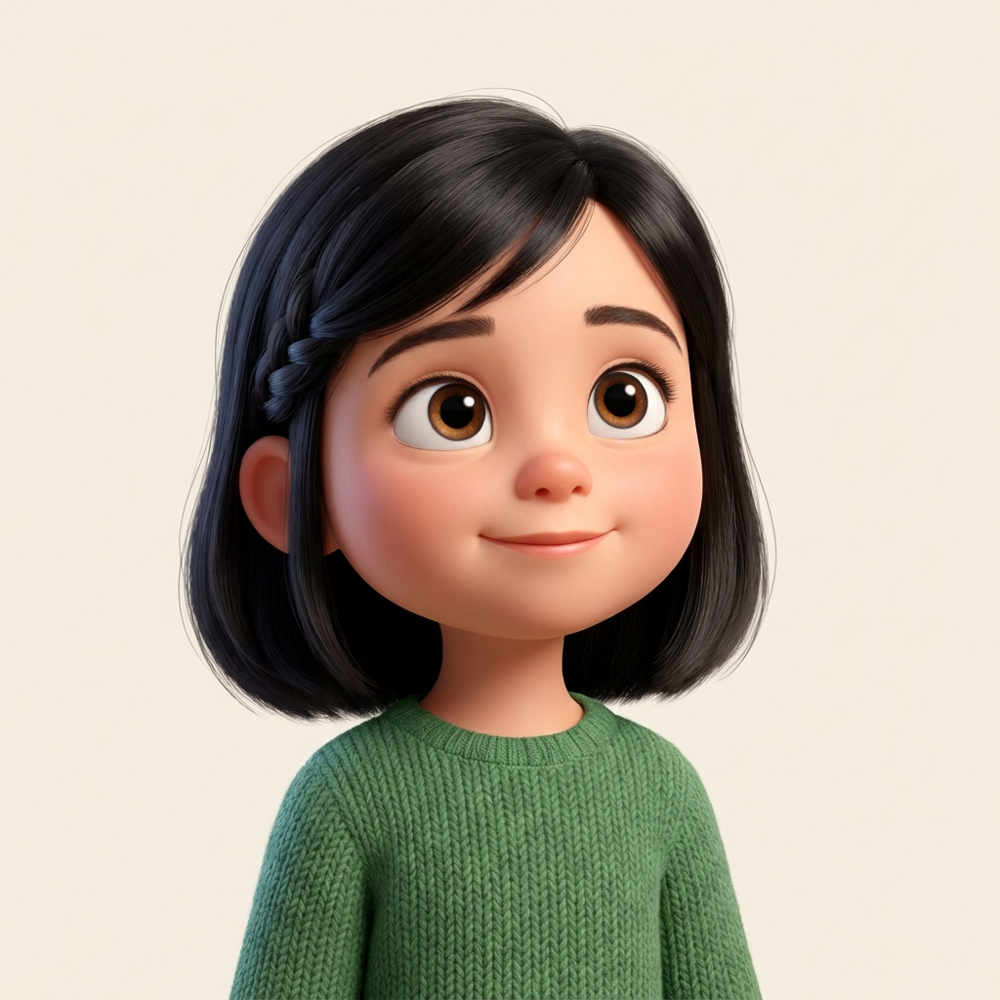

Number cards 1 to 20 and a counting mat, made with Sofia.

Count the dots, find the number, and cheer out loud.
Every number has a friend to match it.
Print the pages and go. Cut out the twenty number cards along the lines. Laminate them if you can, so they last and last. Buttons, pasta or coins make lovely counters for the counting mat.
Each card shows a big number and the same amount of dots. Count the dots to see what the number means. Twenty cards, twenty amounts, from one all the way up to twenty.
Point and say together. The big idea at this age is one to one counting, one number word for one object, with no skipping and no doubling up. Move a finger onto each dot as your child says the number. Then ask the magic question, how many altogether? The last number they say is the total. That is the link between a number and an amount, and it is the whole game.
One · Count the dots on a card, touching each one.
Two · Look at the big number. That is how many there were.
Three · Say it proudly, then find something at home to count the same way.
Praise the trying, not just the right answer. If a count goes wrong, smile and say let us count again together. Slow and happy beats fast and worried every time.
Cut along the dashed lines. Count the dots on each card and say the number out loud.
The dots line up in rows of five, so bigger numbers are easy to count. Five, then some more.
The last four cards. You are nearly at twenty now, brilliant counting.
Place one counter in each box as you count. A full frame is ten. Two full frames make twenty.
Fill the top frame first, box by box. When it is full you have ten. Carry on into the second frame to count all the way to twenty.
Count each group of pictures. Then draw a line to the number that matches, or write the number in the box.
A apples = 3 · B stars = 6 · C fish = 4 · D hearts = 8 · E flowers = 5
Look at the number in each shape. Find that number in the key, then colour the shape that colour.
Loved counting with Sofia? She has a free Count to 20 tracing pack waiting, with big friendly numbers to trace and colour so your child learns to write every number too. It is our thank you for printing this one.
Made by Guided Childhood, the UK platform helping families raise confident kids in a digital world. If your little one loved counting with Sofia, a kind review on Etsy helps another family find it. Thank you.
My colour is green. Green is lovely for the leaves, the grass and my shield. Try warm yellow and orange for the sun and the flower, and soft pink for the petals. Blue is perfect for the little pot.
Start soft. Lay down a gentle layer of colour, then go over it again to make it richer. Light to strong always looks lovely, and it never tears the paper.
Colour the big shapes first, like the flower and the pot. Then colour the little dots and details. Big to small keeps your hand relaxed and your page tidy.
Follow the bold black lines and slow down at the edges. If you wander over a line, no worry at all. We all do. Your page, your rules, guardian.
Colour the dots on the number cards too, a different colour for each number if you like. When every page is bright, you have a counting set you made all your own. Beautiful work.